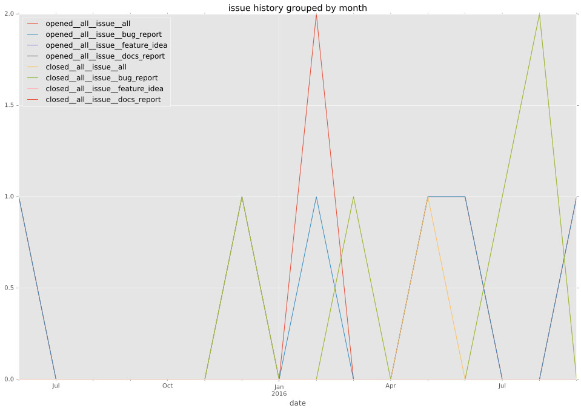
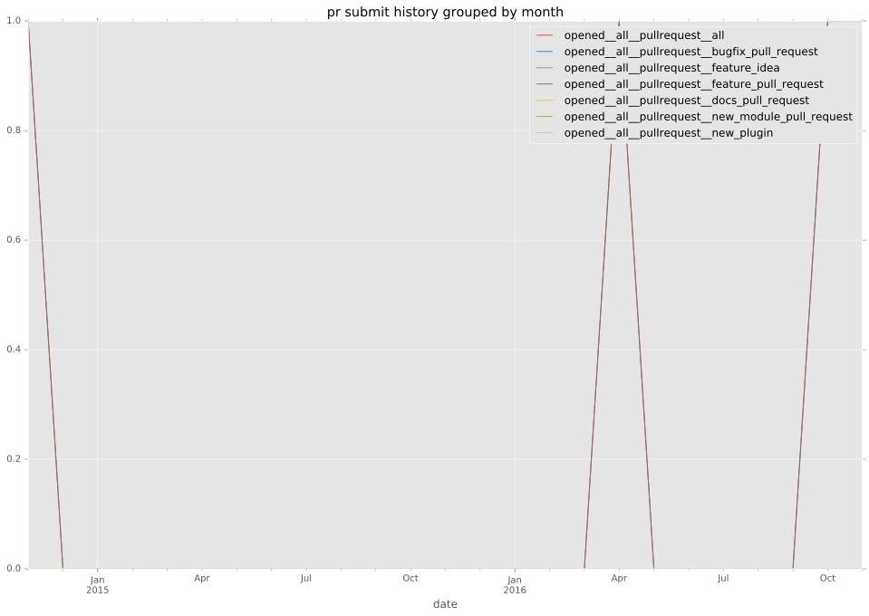

authors
- jhawkesworth
maintainers
- jhawkesworth
contributors
- abadger : 2 commits
- mikeputnam : 1 commits
- jhawkesworth : 5 commits
- bcoca : 5 commits
- nitzmahone : 2 commits
- jimi-c : 9 commits
total issue counts
feature pull request: 1
docs report: 2
pullrequest: 4
docs pull request: 1
bugfix pull request: 2
issue: 7
bug report: 5
issue history

pullrequest history

days open by issue type
bugfix pull request
count: 4
std: 0.0
min: 0
max: 0
median: 0.0
mean: 0.0
all
count: 14
std: 109.951337888
min: 0
max: 419
median: 11.5
mean: 48.2857142857
pullrequest
count: 0
std: nan
min: nan
max: nan
median: nan
mean: nan
docs pull request
count: 2
std: 0.0
min: 10
max: 10
median: 10.0
mean: 10.0
docs report
count: 2
std: 49.4974746831
min: 13
max: 83
median: 48.0
mean: 48.0
feature pull request
count: 2
std: 0.0
min: 21
max: 21
median: 21.0
mean: 21.0
issue
count: 0
std: nan
min: nan
max: nan
median: nan
mean: nan
bug report
count: 4
std: 195.432000109
min: 0
max: 419
median: 49.5
mean: 129.5
closures grouped by total days open